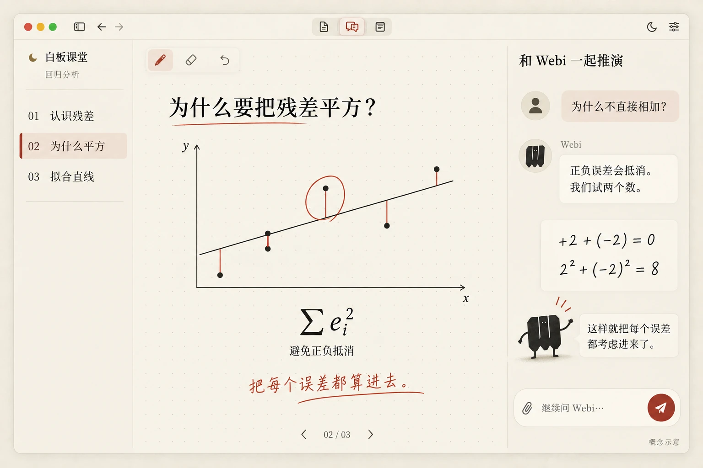
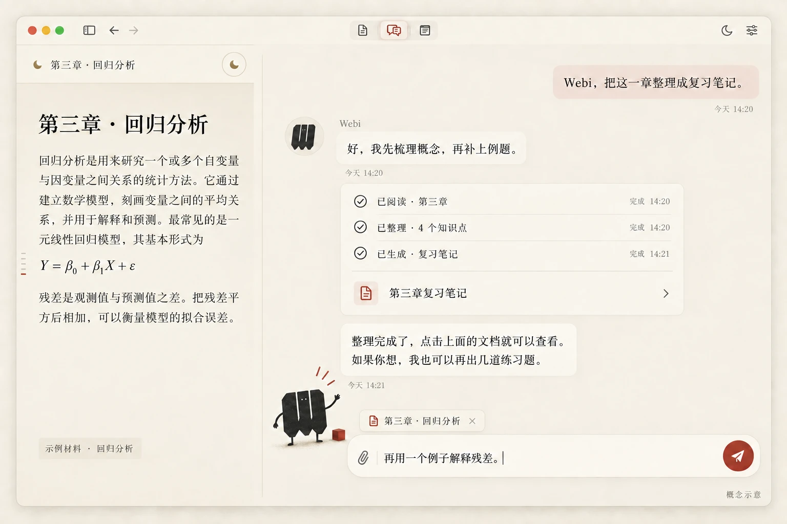
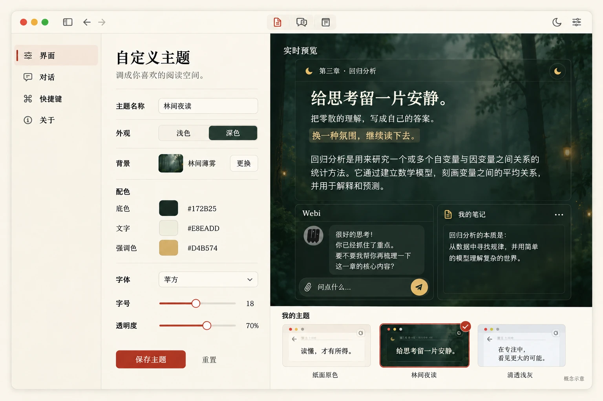

01
白板课堂
把材料变成一堂可推演的课。跟着 Webi 看板书、拆解例题，哪里没懂，就在旁边继续问。
从读一页材料，到一起推演
和魏碑一起学习，还可以是什么样？
以魏碑现有界面为基础，探索接下来的学习方式。以下为 AI 生成的概念示意，并非已上线功能。
把材料变成一堂可推演的课。跟着 Webi 看板书、拆解例题，哪里没懂，就在旁边继续问。
从读一页材料，到一起推演
在聊天框里告诉 Webi 你想做什么。它围绕当前材料整理、解释、生成笔记；你可以查看过程，随时追问或调整方向。
从聊一聊，到一起把事情做完
从温暖纸面，到林间夜读，再到清透浅灰。自己搭配背景、配色、字体与透明度，让同一张学习桌面，变成不一样的阅读空间。
让学习空间，有自己的样子
更多想法，会在这里慢慢展开。你也有想尝试的方向？